When we want to realize the dynamics of a digitized IFS
with the help of an automata network
 ,
we have the following picture.
,
we have the following picture.
As C we take a regular lattice of some dimensionality m. In a practically interesting case, m = 2 and
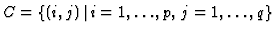
. The alphabet of states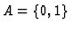
. The cell neighborhoods are defined by the inverses of the IFS's functions: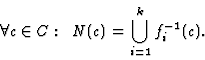 |
(15) |
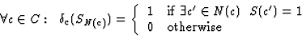 |
(16) |
To build a bridge to our neural network algorithm (Sec. 4.3), we take as C our unit square Su of pixels and obtain the neighborhoods N(c) by analogy with computing the synaptic weights.
The whole process of going from an initial IFS
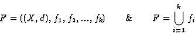
Fist of all we go to the dynamical system
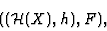
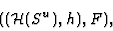
Then we use our Automata Network Algorithm to get a special
intermediate form of the IFS F which we call "geometrical
form":
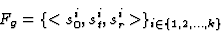
\}_{i \in \{1,2, \dots, k\}}\end{displaymath}">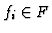
(Sec. 4.3).
We continue to apply the Automata Network Algorithm and eventually
construct the automata network
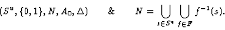
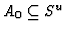
, and after a big enough number M of iterations get an approximation AM of the IFS's attractor AF: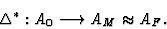